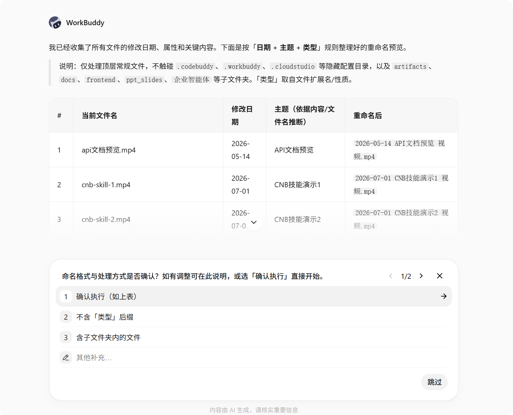
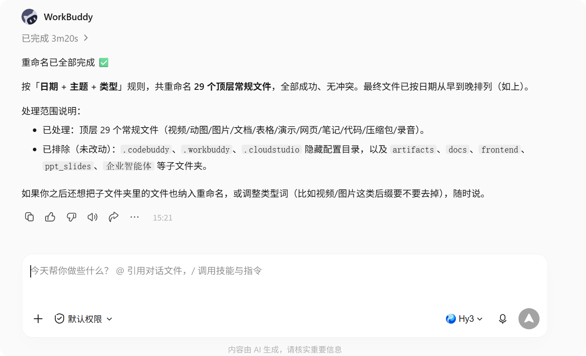
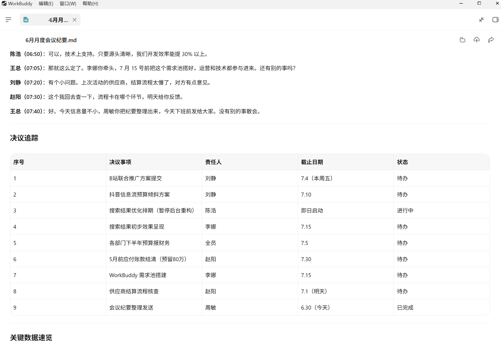
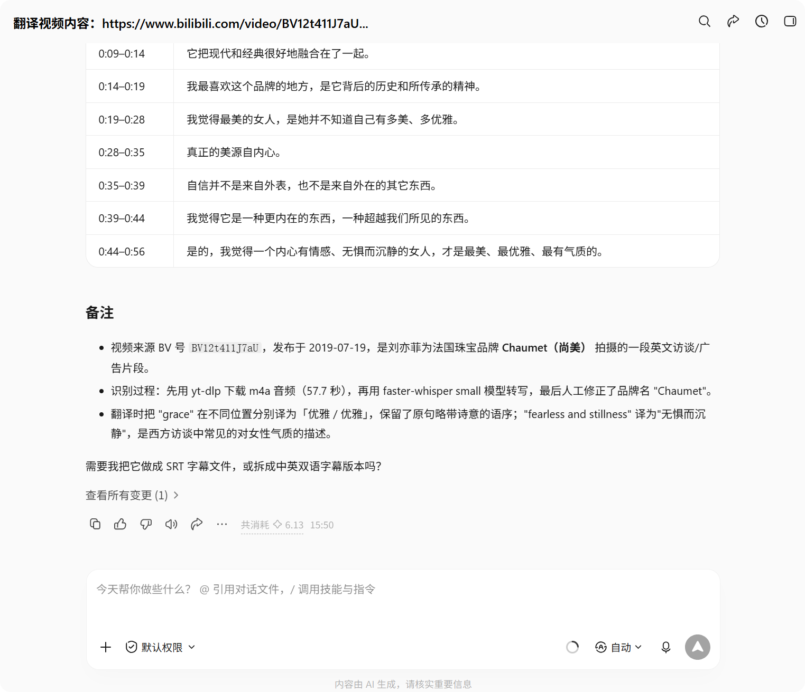

实践一：文件内容识别与处理
一、文档说明
本文介绍如何用 WorkBuddy 处理三类常见任务：批量整理文件、整理会议纪要、翻译外文视频。适合需要快速提取内容、重组信息或生成结果文件的场景。
涉及读取或改写本地文件的操作，建议先了解 两个权限模式，默认权限模式下会在高风险动作前请你确认，更安心。
二、批量重命名文件
适用场景与目标
- 适用场景：文件夹里有一堆命名混乱的图片、合同、票据或资料，想按统一规则改名方便查找。
- 目标效果：根据文件内容或时间信息，自动生成统一、可检索的文件名。
示例指令
请读取这个文件夹里的文件内容或属性，按「日期 + 主题 + 类型」的规则批量重命名，先展示重命名预览，确认后再执行。
开始前的准备
- 怎么交给 WorkBuddy：将文件夹路径设置为工作空间，或直接把文件拖进对话框。
- 支持的文件：常见文档（PDF、Word、Excel、PPT）、图片、文本，以及带可读文字或时间属性的文件；命名依据可以是文件内容，也可以是创建/修改时间、原标题等属性。
- 本地权限：WorkBuddy 需要对该文件夹有读取和改名权限。系统保护目录、企业管控目录等受保护路径会被拦截或要求你确认，不会悄悄改动。
- 处理时长：取决于文件数量和内容复杂度，少量文件通常几分钟内完成；文件很多时会更久，建议先拿一小批试跑，提交后保持电脑在线。
预期效果
先输出一张重命名对照表：

你「确认执行」后，WorkBuddy 才会真正改名，并告知完成数量与跳过的文件。

安全提示
批量重命名会直接改变你的文件，属于高风险操作：
- 先备份或小批量试跑：重要目录建议先复制一份，或先对几个样本文件试跑，确认规则符合预期再扩大范围。
- 只在你确认后执行：让 WorkBuddy 先展示预览，你明确回复「执行」后再写入。
- 保留可回退的依据：修改前 WorkBuddy 会在系统上自动备份；你也可以让它先输出一份新旧文件名对照表，需要时可手动改回原名。
- 避开敏感文件：系统目录、加密文件、正被其他程序占用的文件会被自动跳过；含隐私、财务密钥、凭证的目录不要直接批量处理，建议先移到独立临时目录。
三、整理会议纪要
适用场景与目标
- 适用场景：会议录音、聊天记录或零散笔记需要整理成正式纪要。
- 目标效果：提炼议题、结论、待办事项与负责人。
示例指令
请根据我提供的会议记录，整理成一份正式会议纪要，包含会议主题、关键结论、行动项、负责人和截止时间。
开始前的准备
- 怎么交给 WorkBuddy：把会议记录文本直接粘贴到对话框，或把本地文件（如 TXT、Markdown、Word、PDF）拖进对话；如果是录音，可先在本地配置语音转写能力把音频转成文字再整理。
- 支持的内容：以文本为主，原始录音、视频需先转为文字后再整理。
- 本地权限：读取上传的会议文件需要该目录的读取权限；输出纪要默认保存在当前会话或你指定的工作空间，写入需对应目录权限。
- 处理时长：与记录长度有关，短记录很快，长记录或多轮聊天会更久，建议先小批量验证。
预期效果
输出一份结构化纪要，例如：

四、外文视频翻译
适用场景与目标
- 适用场景：课程视频、访谈、产品演示或培训视频需要翻译与摘要。
- 目标效果：提取字幕内容，翻译成中文，并输出重点摘要。
示例指令
请帮我提取这个外文视频的字幕内容，翻译成中文，并整理成一份便于阅读的摘要文档，重点标出关键观点和专业术语。
开始前的准备
- 怎么交给 WorkBuddy：提供视频文件的本地路径，或提供独立的字幕文件（如 SRT、VTT）。
- 字幕从哪来：优先使用视频内嵌字幕或外挂字幕文件；如果没有字幕，需要先用语音转写把音频变成文字，再翻译（识别准确度受音质、语种、口音影响）。
- 支持的文件：常见视频与字幕格式；超长视频建议分段处理。
- 本地权限：读取视频/字幕需要对应目录的读取权限；输出摘要写入需目标目录权限。
- 处理时长：与视频时长正相关，无字幕需先转写时会更久，建议预留充足时间并保持设备在线。
预期效果
输出一份翻译摘要，例如：

五、使用建议
- 先说清输出格式：提前说明要 Markdown、Word、表格还是纯文本。
- 补充约束条件：如命名规则、纪要结构、翻译风格与术语保留方式。
- 先小批量验证：先对少量文件试一次，确认效果再扩大全量。
- 高风险操作先看预览：批量重命名、文件写入等会改变本地状态的操作，务必先看预览与对照表，确认后再执行。
- 预留真实时长：视频翻译、长纪要等任务耗时较长，提交后保持设备在线，避免中途中断导致结果缺失。